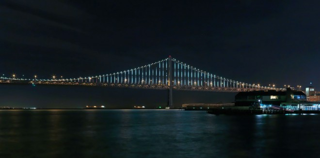

Twinkle, Twinkle, Giant Span
25K Controllable LEDs to Illuminate SF’s Bay Bridge Tuesday

The Bay Bridge—which connects San Francisco to Oakland—doesn’t get much love. It’s longer, stronger, and carries more traffic than the Golden Gate, and yet by comparison to its International Orange-painted sibling, it’s basically invisible. But this spring the Bay Bridge will get its moment to shine, courtesy of more than 25,000 LEDs strung along the vertical wires connecting the deck of the 1.8-mile-long western span to the suspension cables hanging from its towers.
Bay Lights, Explained

More than 25,000 networked LEDs are attached 12 inches apart on 300 vertical cables and held in place by zip ties and specially designed, 3-D- printed clips.
The lights—each individually controllable with 255 levels of brightness, will together form an animated screen visible to 50 million people over the two years it’ll be active. In fact, depending on how you measure such things, the project—called the Bay Lights—will be the biggest public light sculpture in the world.
But what to do with that vast, illuminated canvas? According to artist Leo Villareal, sequencing the lights to make patterns that move in novel ways was his biggest challenge. “It’s not going to be a light show. It’s not using lights like they’re used in advertising. It’s not fireworks,” he says. “It’s a new way of bringing digital into the world.” OK, but what does that mean? On the bridge during the installation, Villareal had to think about it for a moment. Finally he hit on an answer, smiling: “Software in the sky.
Bay Lights in Numbers
- 1.8 miles: length of The Bay Lights from end to end (about 26.4 football fields)
- 12 inches: space between individual LED lights in strand mounted on each cable
- 500 feet: height of the installation to the tallest point
- 300: number of vertical cables on the bridge that will be fitted with LED lights
- 240 feet: length of the longest bridge cable
- 2 feet: length of the shortest bridge cable
- 728: number of power and data boxes used in the light sculpture system
- 100,000 feet: linear feet of cable for power, fiber and Cat 5 wires in the system
- $8 million: total cost of the project to make The Bay Lights a reality
- 50 million: estimated number of people dazzled by The Bay Lights during its two-year presence
- $97 million: conservative estimate of dollars the project will add to the local economy